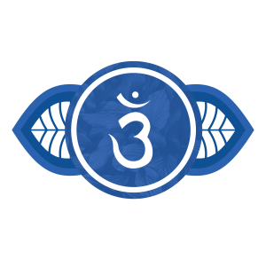
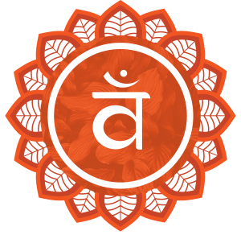
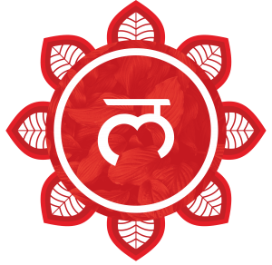

_
- Localização:
- Cor associada:
- Elemento associado:
- Função principal:

Arquetipos
A Raiz (Inconsciente Profundo / Instintos / Herança Coletiva)
- O que significa: representa aquilo que nos sustenta invisivelmente: instintos, traumas herdados, sabedoria ancestral.
- Terapia / introspecção: perceber de onde vêm certos impulsos e padrões repetitivos (ex: reações automáticas de medo, raiva, apego).
- Prática: meditação ou escrita sobre padrões familiares e heranças emocionais (“O que eu repito dos meus pais? O que não me pertence mas ainda me influencia?”).
- Resultado: fortalece o senso de identidade e liberta do peso inconsciente.
Uso prático:
O Tronco (Ego / Estrutura / Identidade)
- O que significa: é a forma que o ser humano dá a si mesmo no mundo, "eu sou".
- Autodisciplina: criar hábitos e rotinas que sustentem a vida (como o tronco sustenta a árvore).
- Exercício: afirmar diariamente sua identidade consciente (“Eu sou alguém que…”), reforçando a coesão interna.
- Resultado: evita dispersão e fortalece a autoimagem saudável.
Uso prático:
Os Galhos (Pensamento / Expansão / Conexões)
- O que significa: são os caminhos que seguimos, as ideias, escolhas e ramificações de nossa vida.
- Planejamento: listar caminhos possíveis para cada meta (ex: carreira, relacionamentos, projetos).
- Prática: fazer um mapa mental em forma de árvore — uma raiz (tema central), um tronco (decisão principal) e vários galhos (possibilidades).
- Resultado: amplia a visão e evita a ilusão de que há “apenas uma saída”.
Uso prático:
As Folhas (Sensibilidade / Experiência / Energia Vital)
- O que significa: o contato direto com o ambiente — os cinco sentidos, emoções e experiências diárias.
- Atenção plena: cultivar mindfulness, ou seja, estar realmente presente nas experiências sensoriais.
- Prática: em cada refeição, caminhada ou conversa, respirar fundo e perceber sons, cheiros, sabores, toques.
- Resultado: fortalece a conexão com o “aqui e agora”, reduz ansiedade e aumenta vitalidade.
Uso prático:
Os Frutos (Realização / Criação / Contribuição)
- O que significa: os resultados do que você cultiva, aquilo que o mundo recebe de você.
- Serviço / Criatividade: pensar em como sua vida gera valor para os outros (seja um gesto, um trabalho, um conhecimento).
- Prática: definir um projeto ou pequena ação semanal que simbolize o “fruto” da sua existência (ajudar alguém, criar algo, compartilhar conhecimento).
- Resultado: sentido de propósito e realização profunda.
Uso prático:
A Semente (Origem / Potencial / Renascimento)
- O que significa: a essência imortal, o núcleo de potencial infinito em cada ser humano.
- Resiliência: lembrar que, mesmo quando algo “morre” em sua vida (um ciclo, uma relação, uma fase), a semente permanece.
- Prática: em momentos de crise, escrever: “O que está nascendo dentro de mim agora, mesmo que pareça o fim?”.
- Resultado: aumenta a confiança no ciclo da vida, transformando perdas em renascimentos.
Uso prático: